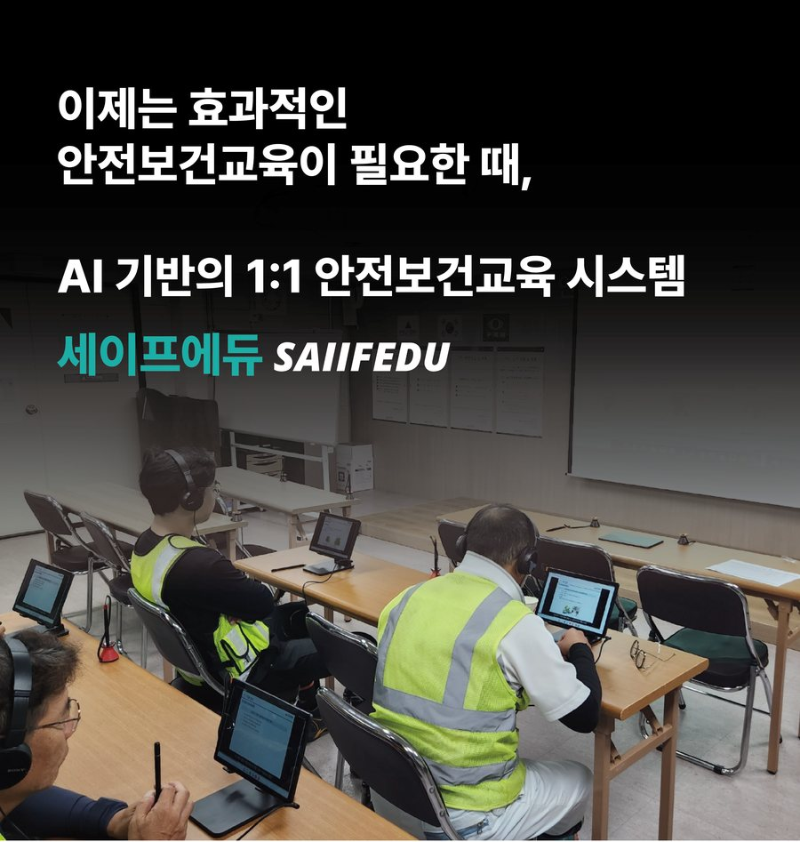
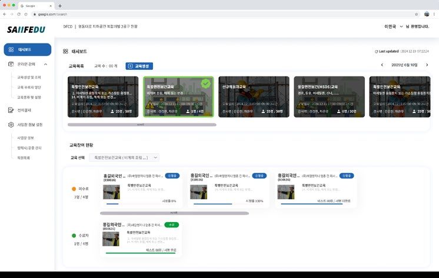
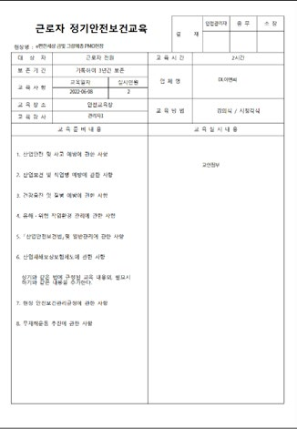
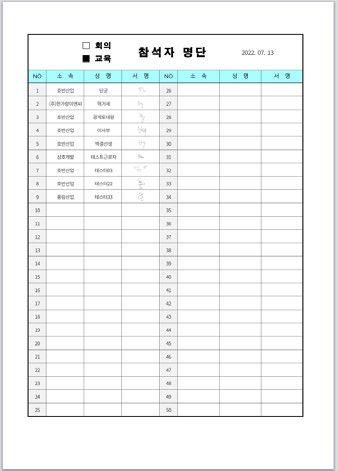
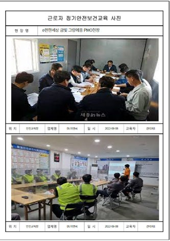
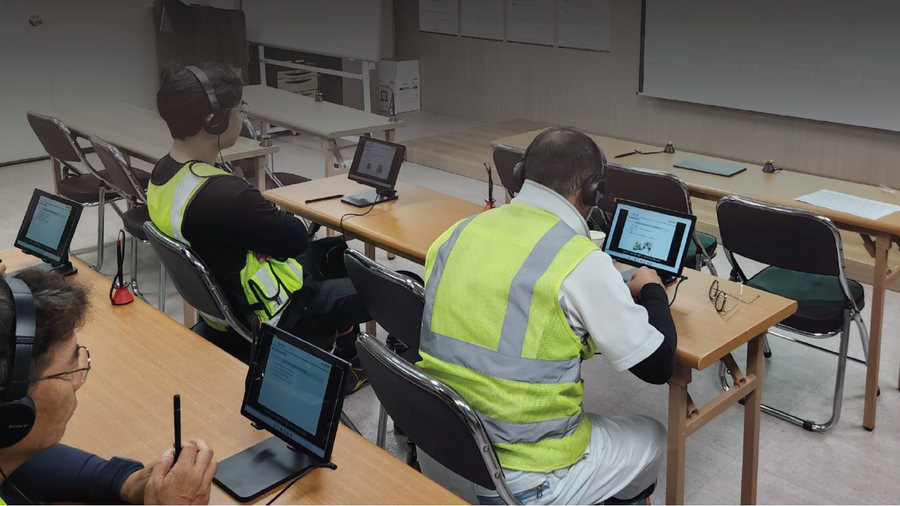

1인 1태블릿
강사 한 명이
수십 명을 동시에.
좌석마다 태블릿과 헤드셋. 근로자가 각자의 속도로 같은 표준 교육을 받습니다.
1:1김현장 님, 안녕하세요
오늘의 교육
교육장 좌석마다 태블릿 한 대. 근로자는 스스로 로그인하고, 모국어로 듣고, 태블릿에 전자서명을 기록합니다. 교육이 끝나는 순간 교육일지와 참석자 명단, 사진대지는 이미 완성되어 있습니다.

1인 1태블릿
좌석마다 태블릿과 헤드셋. 근로자가 각자의 속도로 같은 표준 교육을 받습니다.
1:1다국어
교안 속 글자는 같은 자리에 번역하고, 언어별 AI 나레이션을 입힙니다. 외국인 근로자도 모국어로 듣습니다.
🇰🇷🇺🇸🇨🇳🇻🇳🇷🇺🇺🇿AI 집중도
태블릿 카메라가 얼굴과 어깨 자세를 측정하고, 집중도가 낮은 구간을 리포트로 남깁니다.
자세 정상자세 이탈이해도 평가
교육 직후 테스트. 미달이면 최대 3회까지 다시 봅니다. 들었는지가 아니라 이해했는지 남깁니다.
70점문서 자동화
교육일지, 전자서명 참석자 명단, 사진대지를 교육 종료와 동시에 출력 가능한 형태로.
이력 관리
반기 이행 점검 때 사업장별 교육 이력을 바로 꺼내 봅니다.
DB안면인식 기반 집중도 분석부터 다국어 영상교육, 교육이력 자동관리까지
산업안전보건교육의 디지털 혁신을 경험하세요.

교육영상 재생 중
AI ANALYSIS
밀폐공간 질식재해 예방 및 응급조치 요령
AI 안면인식 기술로 근로자의 교육 참여도와 집중도를 실시간 분석합니다. 졸음, 이탈 등을 감지하여 교육 효과를 극대화합니다.
법정 필수 안전보건교육에 맞춘 전문 영상강의를 제공합니다. 신규채용자, 정기, 특별, 관리감독자 교육 등 교육 유형별 콘텐츠를 갖추고 있습니다.
근로자 개인별 맞춤 1:1 교육 시스템을 지원합니다. 한국어, 영어, 중국어, 베트남어 등 다국어 자막과 AI 나레이션으로 외국인 근로자도 쉽게 학습할 수 있습니다.
근로자별 교육 수강 이력을 체계적으로 관리하고, 교육확인서와 수료증을 자동 생성합니다. 출력 및 전자문서 보관 기능을 제공합니다.
착석부터 현장투입까지
안전교육 참여
배정된 교육 과정
한국어 자막작업 전, 안전대 고리를 먼저 체결하세요
특별안전보건교육 · 고소작업 · 12:40 / 20:00
이해도 평가 · 5문항 중 1번
Q1. 고소작업 시 반드시 착용할 것은?
90점 합격 · 70점 이상
교육 수료
수료증 발급 · 교육이력 자동 저장
좌석별 태블릿에 이름·생년월일·연락처를 입력하면, 미리 등록된 얼굴 사진으로 본인인지 확인합니다. 대리 수강은 여기서 걸러집니다.
공종과 작업에 맞는 과정이 미리 배정되어 있습니다. 한 교육장에서 신규채용자 교육과 특별교육을 동시에 운영할 수 있습니다.
산업안전보건법 시행규칙 기준의 표준교안 영상을 헤드셋으로 듣습니다. 자막은 근로자의 언어로, 집중도는 AI가 확인합니다.
교육 직후 이해도 평가를 봅니다. 70점 이상이면 통과, 미달이면 최대 3회까지 재응시합니다.
손가락으로 전자서명하면 수료증이 발급되고, 교육이력이 근로자 DB에 저장됩니다. 그대로 현장에 투입됩니다.
다국어 교육
외국인 근로자도 동일한 교육을 모국어로 듣고 이해합니다. 자막과 AI 나레이션을 20개 이상 언어로 제공하고, 교안 화면 속 글자까지 번역해 같은 자리에 다시 배치합니다.
한국어 자막작업 전, 안전대 고리를 먼저 체결하세요
대표 언어 6개 예시입니다. 화면 속 번역 문구는 예시입니다.
AI 교육자료 생성
안전교육 PDF나 이미지를 올리면 AI가 내용을 분석해, 자막과 언어별 AI 나레이션이 들어간 영상 교육자료로 바꿉니다. 현장 교안이 그대로 다국어 영상이 됩니다.
지금 쓰는 교안, 사진, 안내문을 그대로 올립니다.
자막 · AI 나레이션 언어 선택
현장 근로자 국적에 맞춰 언어를 고릅니다. 20개 이상 언어를 지원합니다.
자막과 나레이션이 들어간 영상이 만들어져 바로 교육에 배정됩니다.
AI 영상분석
AI 안면인식 기반으로 근로자의 얼굴과 어깨까지 자세를 측정합니다. 고개를 돌리거나 자리를 벗어나면 영상이 멈추고 집중 안내가 뜹니다. 집중도가 낮았던 구간은 관리자 리포트에 남습니다.
집중이 필요해요 · 영상 일시정지
문서 자동생성
근로자는 이름·생년월일·연락처만 입력하고 서명합니다. 안전관리자가 아침마다 붙들고 있던 서류는, 교육이 끝나면 사업장 양식대로 출력할 수 있습니다.



관리자 대시보드
근로자 정보와 교육이력을 통합 관리하고, 실무 양식을 엑셀로 내려받습니다.
QR 체크인 · 스마트 TBM
현장에서 모바일 QR로 참석을 확인하고 전자서명을 받습니다. TBM 기록도 함께.
기존 교안 활용
보유한 교안을 영상 교육자료로 제작해 드리고, 대시보드에서 직접 등록할 수도 있습니다.
협력사
협력사 주관 교육도 원청과 같은 과정·형식으로 이력이 남습니다.
중대재해처벌법
교육 일시·대상자·내용·서명이 하나의 기록으로. 2024년 1월 27일부터 상시근로자 5인 이상 사업장에 적용됩니다.
도입 사례
기존 강의식 교육 대비
긍정 평가
관리자
타 현장 적용 추천
시스템 만족도
‘좋음’ 이상

지금 바로 시작하세요